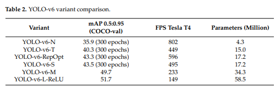

Designed a hardware-efficient backbone for faster inference on various devices.
Separated classification and regression heads, improving accuracy by resolving task conflicts.
Adopted an anchor-free approach, simplifying the pipeline and making it more suitable for edge deployment.
Source: Machines (2023), Figure 10
Source: Machines (2023), Table 2